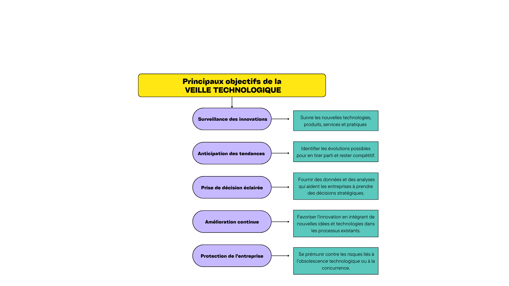

Ma Veille Technologique
Voici mon sujet de Veille Technologique:
Qu'est-ce que la veille technologique ?

La veille technologique est un processus collecte, d'analyse et de diffusion d'informations relatives aux évolutions et aux tendances technologiques dans un domaine spécifique. Elle vise à anticiper les changements et à s'adapter aux nouvelles technologies, méthodes et pratiques.
Principaux objectifs de la veille technologique :
Les défis de la cybersécurité dans l'automobile : vulnérabilités et attaques
Pour quelles raisons ai-je choisi ce sujet ?
L'importance de la veille technologique
Avec l'évolution rapide des nouvelles technologies, notamment dans l'industrie automobile, rester informé des dernières tendances et innovations est essentiel pour rester compétitif sur le marché du travail. La veille technologique est ainsi un outil clé pour anticiper les évolutions et s'adapter rapidement aux changements.

Ainsi, que ce soit par une veille passive ou active, se tenir informé permet de développer des compétences techniques continuellement, de rester polyvalent, et de relever de nouveaux défis. De plus, l’identification rapide des nouvelles technologies et des risques liés (comme les obsolescences ou les failles) devient un atout stratégique pour faire face aux changements rapides dans l’industrie automobile et dans bien d'autres secteurs.
Outils de veille utilisés

Dernières actualités
Avec l'essor des véhicules connectés et autonomes, la cybersécurité est devenue un enjeu majeur pour l'industrie automobile. Les systèmes embarqués modernes, de plus en plus sophistiqués et interconnectés, sont autant de points d'entrée potentiels pour les cyberattaques. Cette évolution expose les véhicules à des risques accrus, allant du simple dysfonctionnement à des prises de contrôle à distance par des acteurs malveillants.
Thème 1 : Les vulnérabilités des systèmes connectés et embarqués
Piratage via borne de Recharge
Environnement : Bornes de rechargeBornes de recharge : un nouveau terrain d'attaque pour les cybercriminels. Données, paiements et véhicules en danger.
Piratage via borne de Recharge
Environnement : Bornes de rechargeBornes de recharge : une nouvelle porte d'entrée pour les cybercriminels. Données volées, rançons et attaques à distance.
Piratage via borne de Recharge
Environnement : Bornes de rechargeBornes de recharge : un nouveau terrain d'attaque pour les cybercriminels. Données, paiements et véhicules en danger.
Thème 2 : Les attaques et les stratégies de défense en cybersécurité automobile
Pen test Automobile
Environnement : Kali LinuxUne nouvelle version de cette distribution dédiée aux tests d'intrusion, avec des outils permettant de pirater les véhicules via le protocole CAN
Faille Tesla
Environnement : Vehicule ConnectésUne cyberattaque a récemment exposé les informations personnelles des propriétaires de Tesla
Lancement de l'AutoCrypt Security Fuzzer au Japon
Environnement : Industrie automobileAUTOCRYPT et Hitachi Solutions lancent un outil de cybersécurité pour tester les logiciels embarqués dans l'automobile au Japon.